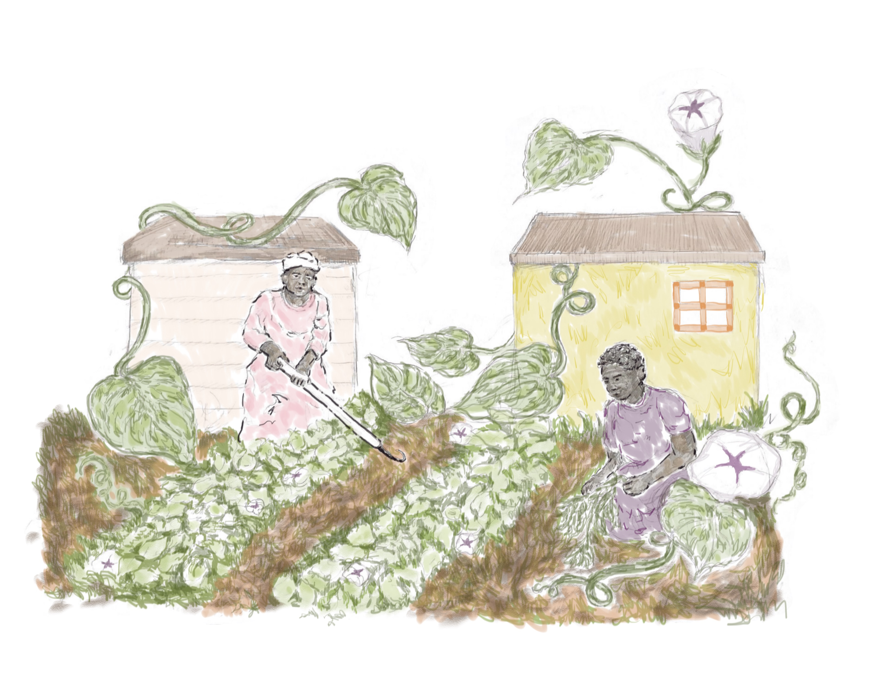
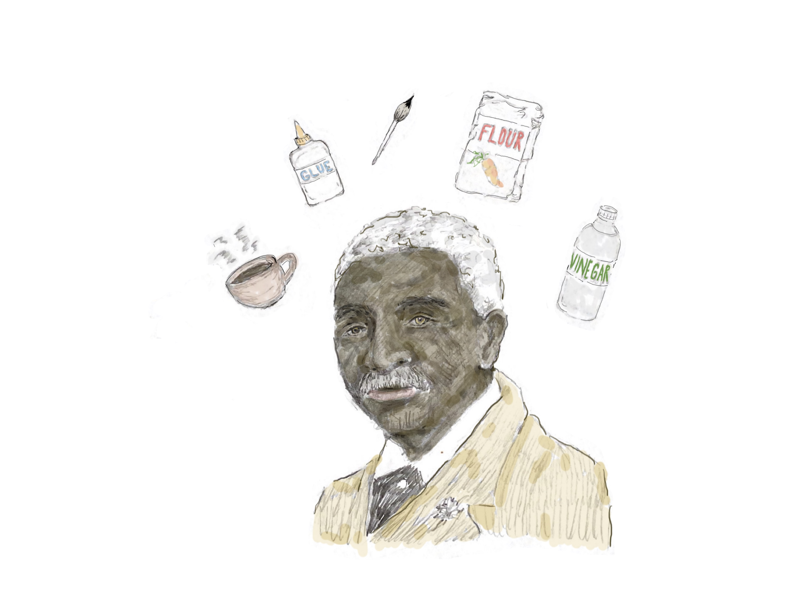
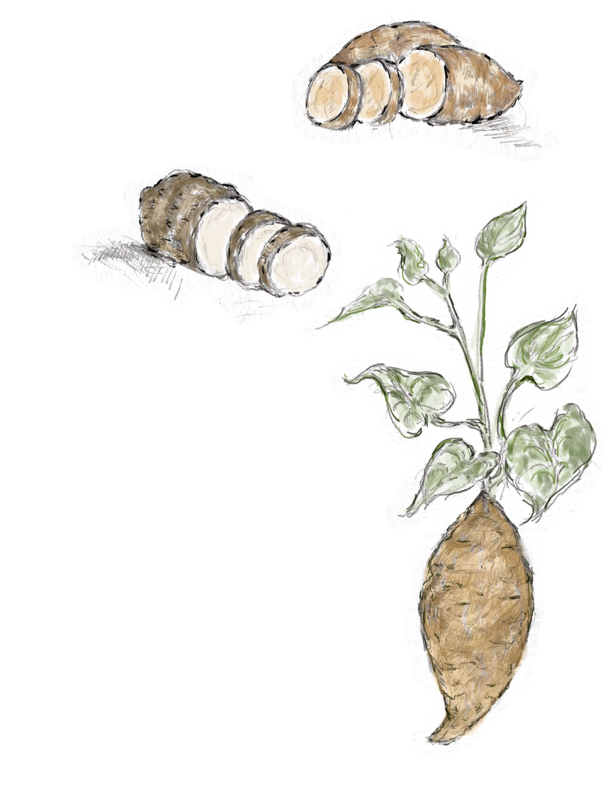
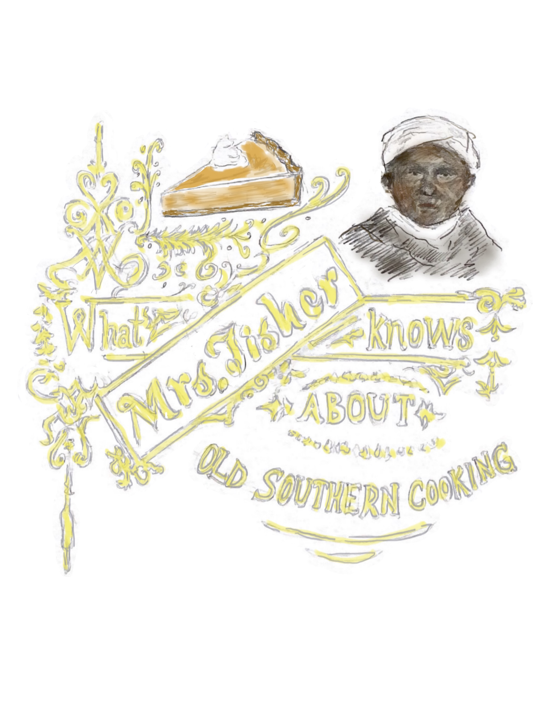
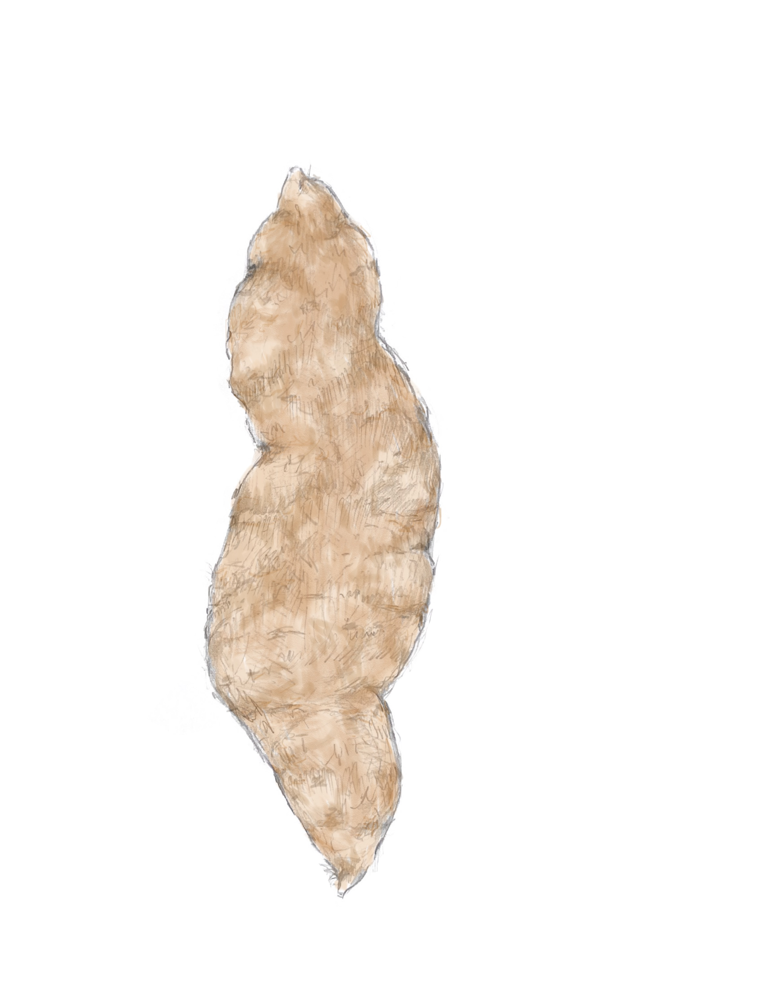
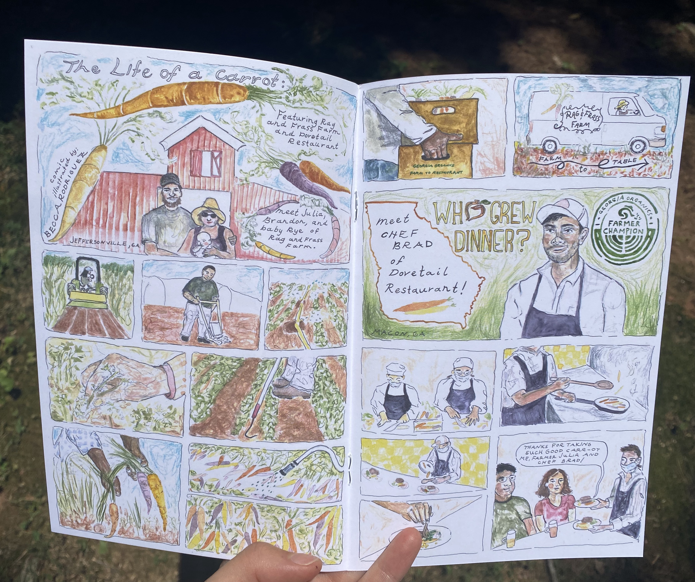

[This page is intended to be white]
For illustration and design quotes, please email: armarierodriguez@proton.me
Find the 2023 Georgia Organics Farmer Champion Zine here. Illustrations by Becca on pgs 8, 9, 14, and 15. 1, 10, 11, 14, 15





Find the 2022 Georgia Organics Farmer Champion Zine here. Illustrations by Becca on pgs 8, 9, 14, and 15.
